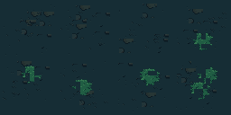

<!doctype html><html lang="ja"><meta charset="utf-8"><meta name="viewport" content="width=device-width,initial-scale=1"><title>洞窟の床・接続修正版</title><style>body{margin:0;background:#102129;color:#cad8d5;font:15px/1.8 system-ui}main{max-width:1152px;margin:auto;padding:20px}h1{font-size:23px}h2{font-size:18px}canvas,img{image-rendering:pixelated;max-width:100%;height:auto}button,a{display:inline-block;background:#28484c;color:#def0e2;padding:8px 14px;margin:5px;border:1px solid #567377}p{color:#a9bfba}</style><main><h1>苔を抑えた洞窟の床</h1><p>64×64pxの接続可能な床8枚。地面を広く残し、苔を小さな群落として配置。</p><button id="shuffle">並びを変えて接続を確認</button><button id="grid">区切りを表示</button><canvas id="map" width="384" height="256" style="width:1152px"></canvas><h2>上下左右のループ確認（2×2）</h2><canvas id="repeat" width="768" height="512" style="width:1152px"></canvas><h2>タイル8枚</h2><p>全タイルの上下・左右を共通色で接続。苔は内部に配置しています。</p><a href="assets/stone-floor-v3/tiles.png">タイルPNG</a><a href="assets/stone-floor-v3/loop.png">配置例PNG</a><a href="assets/stone-floor-v3/tileset.tsj">Tiled定義</a></main><script>const image=new Image();image.src='assets/stone-floor-v3/tiles.png';let data,seed=0,grid=false;const canvas=document.getElementById('map'),ctx=canvas.getContext('2d');function draw(){ctx.imageSmoothingEnabled=false;for(let y=0;y<4;y++)for(let x=0;x<6;x++){let id=data[y*6+x];ctx.drawImage(image,id%4*64,(id/4|0)*64,64,64,x*64,y*64,64,64)}let r=document.getElementById('repeat').getContext('2d');r.imageSmoothingEnabled=false;for(let y=0;y<2;y++)for(let x=0;x<2;x++)r.drawImage(canvas,x*384,y*256);if(grid){ctx.strokeStyle='#aec9a977';ctx.lineWidth=1;for(let x=0;x<384;x+=64)ctx.strokeRect(x+.5,.5,64,255);for(let y=0;y<256;y+=64)ctx.strokeRect(.5,y+.5,383,64)}}window.ready=Promise.all([image.decode(),fetch('assets/stone-floor-v3/map.json').then(r=>r.json())]).then(([,map])=>{data=map.data;draw()});document.getElementById('shuffle').onclick=()=>{seed++;data=Array.from({length:24},(_,i)=>{let v=Math.abs(Math.sin(i*51.73+seed*29.1));return v<.6?i%3:3+(i+seed)%5});draw()};document.getElementById('grid').onclick=()=>{grid=!grid;draw()};</script></html>
